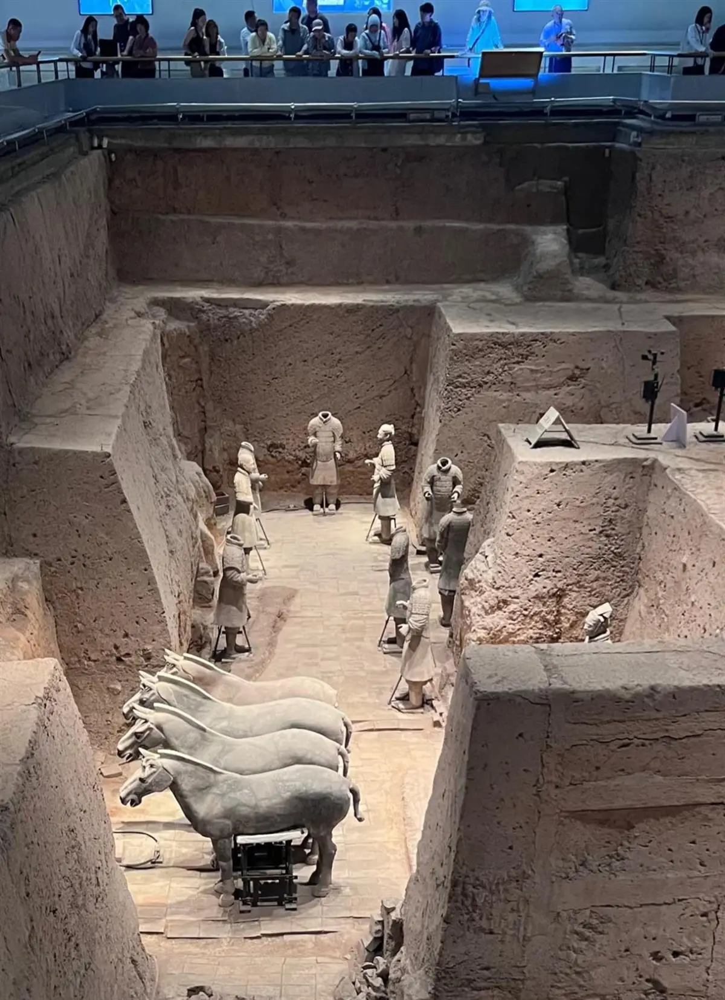
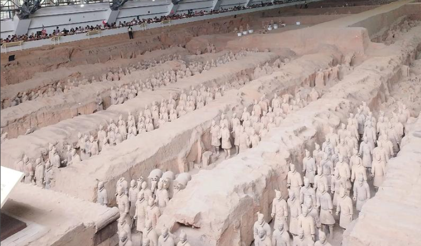
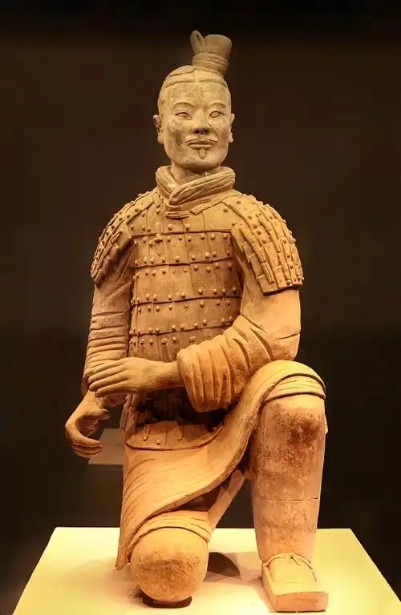
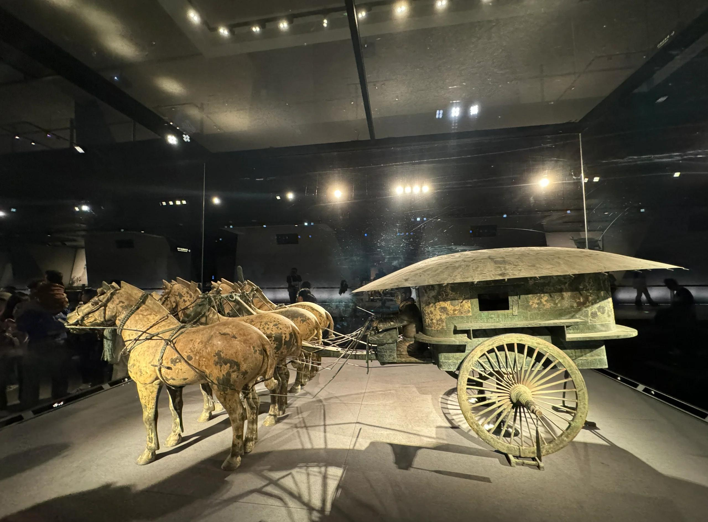
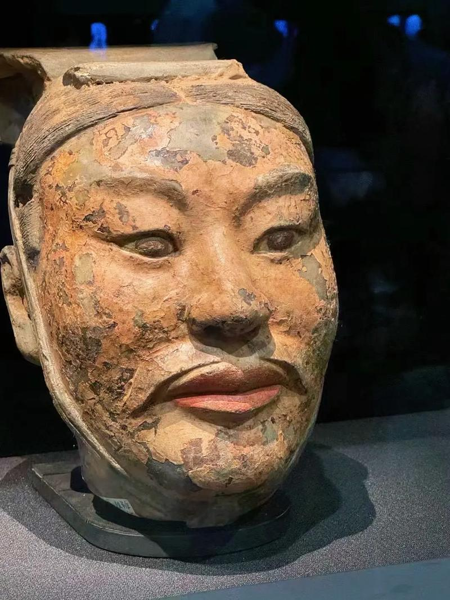

秦始皇兵马俑
发现与发掘
1974年3月，陕西临潼西杨村的几位农民在打井时，意外挖出了破碎的陶俑碎片。这一偶然发现揭开了20世纪最伟大的考古发现之一——秦始皇陵兵马俑的序幕。考古工作者随后在秦始皇陵以东约1.5公里处，陆续发现了三个大型陪葬坑，总面积超过2万平方米。
秦始皇嬴政（前259—前210年）13岁即位起即开始营建陵墓，历时38年，动用工徒70余万人。这是他"事死如事生"观念的极致体现——在地下复刻一支完整的大秦军队，永世守护他的帝国。如今我们看到的兵马俑，正是这支地下军团的冰山一角。
三个俑坑
一号坑 — 主力军阵
一号坑最大，东西长230米、南北宽62米，面积14260平方米，内部排列着约6000件陶俑陶马。军阵由前三列前锋、后方的三十八路纵队主力、南北两翼的侧翼护卫和最后三列后卫组成，再现了秦军"锋—本—翼—卫"的经典布阵。步入一号坑展厅，面对这支沉默了两千年的军队，千人千面、严阵以待的壮观景象令人屏息。

二号坑 — 混合兵种
二号坑位于一号坑东北侧，呈曲尺形，面积约6000平方米。坑内包含弩兵、战车兵、骑兵和步兵四个兵种方阵，展现了秦军多兵种联合作战的战术编制。其中出土的"跪射俑"是兵马俑中最精美的作品之一，保存极为完好，甚至连鞋底的针脚纹路都清晰可见。
三号坑 — 军幕指挥部
三号坑最小，面积仅520平方米，呈"凹"字形。坑内出土了68件陶俑和一辆华丽的彩绘驷马战车，学者们判断这是整个地下军团的指挥中枢。坑内的武士俑面对面站立，似在议事，场景栩栩如生。
千人千面：古代写实主义巅峰
兵马俑最令人惊叹之处在于"千人千面"——每个陶俑的发髻、面容、胡须、表情都各不相同，有老有少，有沉稳有张扬，仿佛是将两千年前真实的秦军将士以陶土定格。陶俑身高约1.75—1.96米，比真人略高，原本通体彩绘，身披黑色铠甲，面部和手为粉红色。可惜历经两千年埋藏，彩绘在出土后几分钟内便氧化剥落。
陶马的塑造同样写实：竖耳、瞪眼、张口嘶鸣，肌肉线条精准有力。每件陶马重约200公斤，分为头、颈、躯干、四肢分别模制后组装，体现了秦代规模化生产与精细化工艺的完美结合。
图片画廊




参观信息
| 地址 | 西安市临潼区秦陵北路（秦始皇陵以东1.5公里） |
|---|---|
| 开放时间 | 08:30 — 17:00（旺季延至18:00） |
| 门票 | 120 元（成人）/ 60 元（学生） |
| 交通 | 火车站东广场乘游5（306路）公交直达；或地铁9号线秦陵西站换乘公交 |
| 小贴士 | 建议安排半天以上时间，按三号→二号→一号坑顺序参观（从小到大渐入佳境）；景区内还有秦始皇陵遗址公园和铜车马博物馆；避开节假日高峰期 |